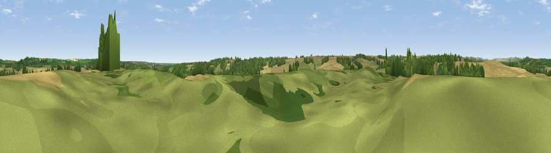

Gravel Pit Hill
#39599 in England · top 73% of its area beats it · near HagworthinghamThe view, rendered

A 360° render of this exact spot computed from the terrain model, tree cover and land cover — summer colours, afternoon light, calibrated against photographs of famous viewpoints. Real trees, hedges and buildings will differ in detail.
The panorama
Grey silhouette: terrain skyline in each direction (720 bearings, Earth curvature and refraction included). Dashed green: skyline with trees (+15 m) and buildings (+8 m) as obstacles. Blue strip: how far the ground is visible on each bearing.
Where the view opens
Wedge length = distance to the farthest visible ground on that bearing (vegetation-aware). Rings at 10, 25 and 50 km.
What fills the view
59% cropland · 26% grassland · 14% woodland
Angular shares of the visible panorama (visual magnitude), not map area. Landscape diversity 0.42 (0–1 Shannon).
Key numbers
More beautiful places nearby
The staircase of upgrades: each row has a higher view potential than everything closer. Driving times are estimates from straight-line distance, calibrated against real road routing — check an actual route before setting out.
| Place | Direction | Drive | Score |
|---|---|---|---|
| Dewy Hill | SSW · 4 km | ~9 min | 34.5 |
| Viewpoint near Brinkhill | NNE · 4 km | ~9 min | 54.4 |
| Warden Hill | NNW · 5 km | ~10 min | 59.5 |
| Viewpoint near East Keal | SSE · 5 km | ~11 min | 66.0 |
| Viewpoint near Claxby | NW · 36 km | ~54 min | 71.5 |
| Broombriggs Hill | WSW · 100 km | ~125 min | 74.4 |
| Viewpoint near Woodhouse Eaves | WSW · 100 km | ~125 min | 77.7 |
| Viewpoint near Speeton | N · 108 km | ~132 min | 80.0 |
53.20186, 0.03161 · source: osm peak · position refined by local search. Computed location — check access rights before visiting.